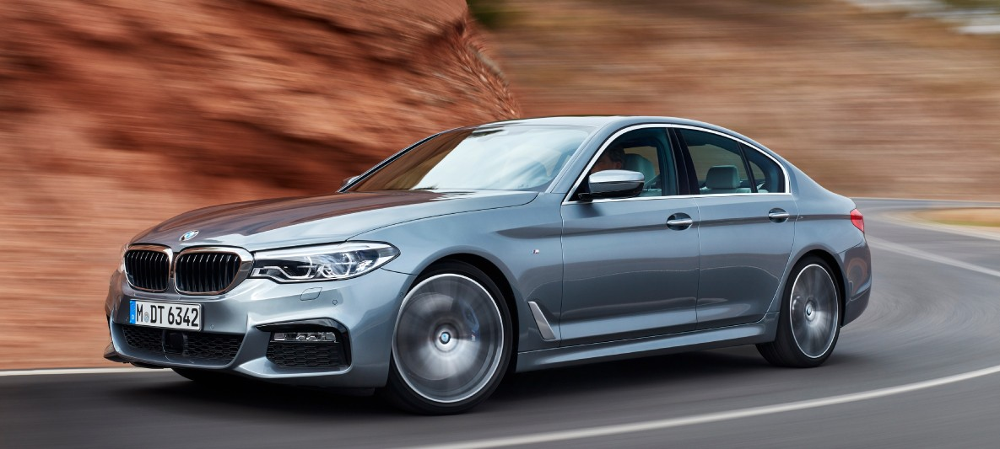
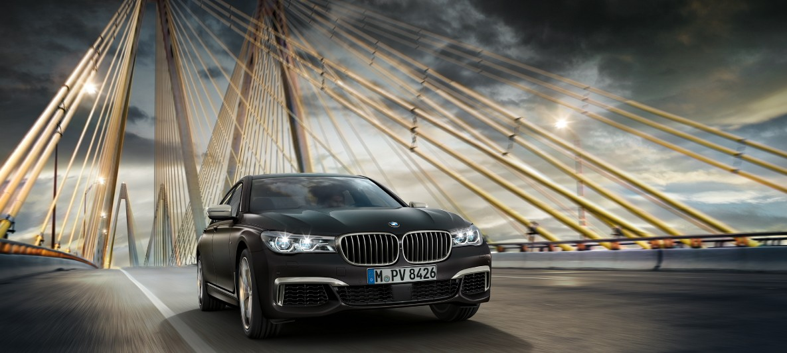
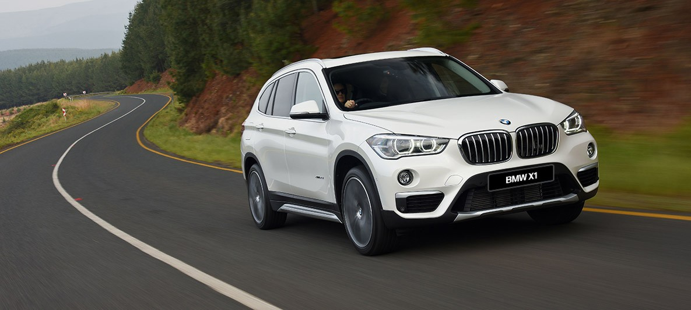

ЮБИЛЕЙНЫЙ BMW 7 СЕРИИ INDIVIDUAL THE NEXT 100 YEARS ПРЕДСТАВЛЕН В МУЗЕЕ РУССКОГО ИМПРЕССИОНИЗМА.
В начале октября на одной из самых современных музейных площадок Москвы – в Музее русского импрессионизма – состоялась презентация роскошного седана BMW Individual 7 серии THE NEXT 100 YEARS, выпущенного в честь векового юбилея концерна BMW Group.
.jpg)
ЮБИЛЕЙНЫЙ BMW 7 СЕРИИ INDIVIDUAL THE NEXT 100 YEARS ПРЕДСТАВЛЕН В МУЗЕЕ РУССКОГО ИМПРЕССИОНИЗМА.
В начале октября на одной из самых современных музейных площадок Москвы – в Музее русского импрессионизма – состоялась презентация роскошного седана BMW Individual 7 серии THE NEXT 100 YEARS, выпущенного в честь векового юбилея концерна BMW Group.

BMW GROUP РОССИЯ ОБЪЯВЛЯЕТ О СТРОИТЕЛЬСТВЕ НОВОГО РЕГИОНАЛЬНОГО ДИСТРИБЬЮТОРСКОГО ЦЕНТРА В ПОДМОСКОВЬЕ.
6 октября 2016 года, на территории индустриального парка «PNK-Бекасово» состоялась пресс-конференция по случаю начала строительства нового регионального дистрибьютерского центра BMW. Ранее BMW Group Россия и международная девелоперская группа компаний PNK Group заключили договор о возведении данного объекта. Логистический узел общей площадью 34 345 квадратных метра будет построен и введен в эксплуатацию в ближайший год.

BMW GROUP РОССИЯ ОБЪЯВЛЯЕТ ЦЕНЫ НА НОВЫЙ BMW M760LI XDRIVE
C осени этого года компания BMW Group Россия начинает принимать заказы на новую спортивную модификацию самого роскошного автомобиля в модельной линейке немецкогобренда – BMW M760Li xDrive. Подчеркнуто яркий и динамичный характер новинки в сочетании с изысканностью и роскошью седанов класса «люкс» создают безупречный сплав спортивности, эксклюзивности и престижа.
